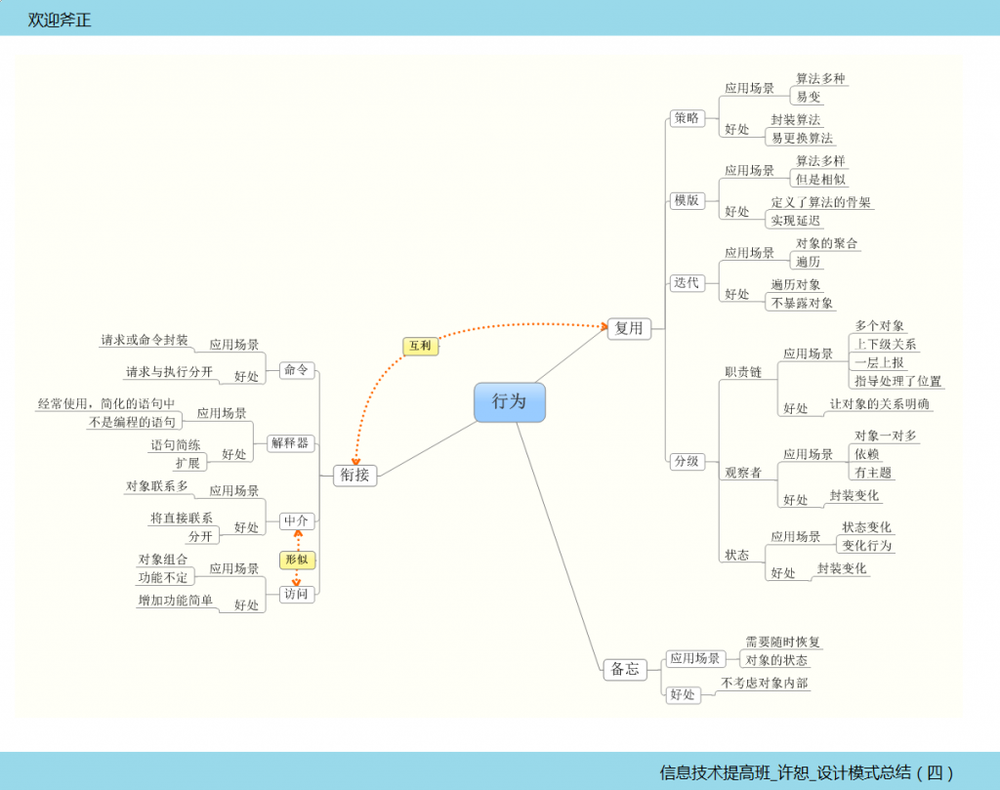

也许我们并没有一起学习编程，但是我们一起学习过设计模式，拥有最多模式的行为型设计模式，让我有种错觉，不是模式为问题而生，好像问题为模式而生，当初的Gof是怎样的机遇，总结设计模式呢？
行为型模式：行为型模式设计到算法和对象间的职责分配，不仅描述对象或类的模式，还描述它们之间的通信方式，刻划了运行时难以跟踪的复杂的控制流，它们将你的注意力从控制流转移到对象间的关系上来。行为型类模式采用继承机制在类间分派行为，例如Template Method 和Interpreter；行为对象模式使用对象复合而不是继承。一些行为对象模式描述了一组相互对等的对象如何相互协作以完成其中任何一个对象都单独无法完成的任务，如Mediator、Chain of Responsibility、Strategy；其它的行为对象模式常将行为封装封装在一个对象中，并将请求指派给它。

网上的解释总是让人很挠头，我自己的理解是行为就是说几个对象的行为该怎么配合，怎么设计，从骨架，到血肉，到创建，行为就是运动，控制流说的就是这个吧，行为型模式不仅仅描述控制流，还阐述他们之间的关系，行为型模式帮助我们更好地控制几个类的运行表现！
老样子具体的例子书上很多，咱们杂这里稍稍说点不同的东西。
我们该怎么应用设计模式呢？
个人想象的步骤：
1，要有“坏味道”的代码，分析其不足。
2，预选几个模式进行纠正。
3，对比找出最佳方案。
4，总结这类问题的模式选择
5，逐步完善和改进
例子：
interface Ifactory
{
IUser CreatUser();
IDepartment CreatDepartment();
//创建sql的工厂
class SqlserverFactory : Ifactory
{
public IUser CreatUser()
{
return new Sqlseruser();
}
public IDepartment CreatDepartment()
{
return new SqlserDepartment() ;
}
}
创建access的工厂
class AccessFactory : Ifactory
{
public IUser CreatUser()
{
return new Accessuser ();
}
public IDepartment CreatDepartment()
{
return new AccessDepartment ();
}
}
客户端知道的类太多了
优化：
class DateAccess
{
private static readonly string db = "Sqlserver";
//private static readonly string db = "Access";
public static IUser CreatUser()
{
IUser result = null;
switch (db)
{
case "Sqlserver":
result = new Sqlseruser();
break;
case "Access":
result = new AccessUser();
break;
}
return result;
}
public static IDepartment CreatDepartment()
{
IDepartment result = null;
switch (db)
{
case "Sqlserver":
result = new SqlserDepartment ();
break;
case "Access":
result = new AccessDepartment ();
break;
}
return result;
}
有选择，用反射及配置文件优化：
//反射优化抽象工厂
//根据配置文件选择创建查询方式
class DateAccess
{
private static readonly string AssemblyName = "shujuku";
//利用配置文件:1,添加引用system.configuration ; 2, using system.configuration
//读取配置文件app.config里的DB
private static readonly string db = ConfigurationManager.AppSettings["DB"];
//private static readonly string db = "Sqlserver";
//静态函数创建用户表
public static IUser CreateUser()
{
string classname = AssemblyName + "." + db + "User";
return (IUser)Assembly.Load(AssemblyName).CreateInstance(classname);
}
//静态函数创建表
public static IDepartment CreateDepartment()
{
string classname = AssemblyName + "." + db + "Department";
return (IDepartment )Assembly.Load(AssemblyName).CreateInstance(classname);
}
}
设计模式，是为了解决问题，但是肯定不是所有的问题都可以用他们解决，所以在现实中，设计模式提供了一种解决方案，编程的时候要有针对性，要面向现实，不能面向设计模式编程！
编程之路其修远兮，吾将上下而求索！